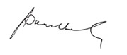

The Audit Committee (‘AC’) is a Sub-Committee of the Board of Directors and is accountable to the Board.
The Committee is responsible for supporting the Board in ensuring that the Group’s financial results, internal controls and risk management are effectively managed in line with best practices and in compliance with accounting standards of The Institute of Chartered Accountants of Sri Lanka, requirements of the Listing Rules of the Colombo Stock Exchange and other relevant laws and regulations.
The terms of reference of the Committee is available on the Company’s website and it is reviewed as and when necessary to reflect any changes.
The AC comprises of four NEDs including two INEDs. Members of the Committee are Mr Chan Chee Beng, Ms Lai Choon Foong, Ms Chandra Ekanayake and Ms Nilanthi Pieris. Mr Chan is Fellow Member of the Institute of Chartered Accountants of England & Wales and Ms Lai is a Chartered Accountant of the Malaysian Institute of Accountants and a Certified Practicing Accountant of CPA Australia. The Board considers that the members have a good mix of skills and expertise in commercial, financial and audit matters arising from the senior positions they hold or previously held in other organisations. This composition meets the requirements of the Listing Rules of the CSE. The Company Secretary is Secretary to the AC.
The Committee had five meetings during the year 2015 and attendance at these meetings is shown in the Corporate Governance Report. The Group Chief Executive Officer, Chief Financial Officer and the Head of Internal Audit attend all meetings by invitation. The External Auditors are also requested to attend the meetings as and when required.
The Chairman of the Committee reports the proceedings of the Committee to the Board after every Committee meeting. Minutes of the meetings were circulated to the Board and significant issues were brought up and discussed at Board meetings.
The Committee dealt with the following key activities during the financial year 2015:
The Committee reviewed the effectiveness of the Group’s internal controls and corporate risks to provide reasonable assurance that there is no material misstatement or loss, the Group's assets are safeguarded and the financial information used within the business and for external reporting is reliable.
A summary of the risk management framework is set out under this report.
The Committee reviewed the Financial Statements including compliance with accounting standards as well as statutory and regulatory requirements, any changes in accounting policies and any significant events or activities with material impact on the Financial Statements.
The Committee reviewed the External Auditors’ Audit Plan including the scope of the work and audit approach. The Committee had assessed the work of the External Auditors and the effectiveness of the audit process on an annual basis, and recommended the reappointment of KPMG as Auditors of the Company for the year 2016 for the approval of the Board and subject to the approval of the shareholders at the AGM.
The Committee reviewed the Internal Audit Plan including the use of external specialist assistance for special and technical audits and monitored the performance of the Internal Audit function against the plan. It also reviewed the internal audit reports including the control issues and recommendations and management action taken to resolve the issues.
On behalf of the Board Audit Committee,

Chan Chee Beng
Chairman of the Board Audit Committee
29 March 2016